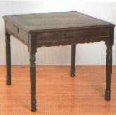
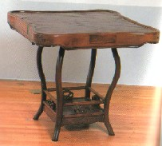

チーポン02・副露順
|
副露（鳴き）面子が２つ以上ある場合、どのようにさらすのでしょうか？
「さらし方」というより「積み上げ方」とでもいった方がいいのかなぁ。よくある「対面からポンしたら真ん中の牌を横に・・・・」という質問とは違います。う〜ん、うまく書けない。たとえば下の場合、Ａ〜Ｃの内、正しいのはどれでしょう。
例  をポンした後、 をポンした後、 をポンした場合 をポンした場合
A.上重ね型 B.下挿入型
 ←後で鳴いた ←後で鳴いた  ←先に鳴いた ←先に鳴いた
←先に鳴いた ←後で鳴いた
C.横連ね型
↑ ↑
後で鳴いた 先に鳴いた
実は私は、ずっとＡだと思っていたんですが、フリーでメンバーをしていた友人が正式にはＢだと聞いたことがあると言ってまして。そんじゃあ、これは質問会議室行きということに・・・・（笑）
Ｃは、時々こうしてる人も見かけるので念のため。もしかしてＣが正しいのか？
まあ、完先ルールでもないので鳴いた順番が問題になることは無いとは思うのですが、今後の参考までに宜しくお願いします。
|
確かに副露順については、文章化されたものはありません。これは大三元か大四喜包（責任払い）でも発生したとき以外、副露の順序なんか別に問題にならないからだと思います。
で、「無駄な動作なしで副露できる」、「摸打の手の陰にならず、相手に見やすい」、「自分の摸打の邪魔にもならない」、「スッキリとまとまる」というので、おのずからA.上重ね型Aがメジャーになっていると思います。
Ｃの横連ね型も散見しますが、これだと３副露以上のときにジャマくさくてちと困るような。B.下挿入型をする人もいるようですが、どうしてこんな手間のかかる方法を取るのかなぁ。
「正式にはＢだ」というのは、どういう根拠でそう言っているのか分かりません。
|
カンチャンを上家からないたとき、横にする牌は左でなくって、真ん中でも良いんでしょうか。
|
たしかに一般麻雀では、  で で をチーしたら をチーしたら のように並べる人もみかけます。 しかしとの間にを入れるというのは、それだけでも余分な動作です。また対面からのポンと見間違う可能性がないわけでもありません。 のように並べる人もみかけます。 しかしとの間にを入れるというのは、それだけでも余分な動作です。また対面からのポンと見間違う可能性がないわけでもありません。
そこでほとんどの麻雀団体などでは嵌張・辺張・両面に関係なく、チーした牌は一番左側に副露するということに統一されています。
分かりやすさと無用なトラブルを未然に避けるためにも、やはり上家からチーポンした牌は、副露牌の一番左側にツケるという事に統一しておいた方が良いと思います。
|
鳴いた牌は河から拾って副露されますね。でもこうすると何巡目に鳴いたかわからなくなって困ると思うのですが（牌譜をとっていない場合）。
例えば１４待ちでリーチ。下家が４を切る、見逃す。対面がそのをチー、数巡後１でロン．．．
あきらかにフリテンですが、４が切られたのがリーチ後か前かどう判定すればよいでしょうか？
|
たしかにチーポンの時期を保存しておく事はできません。もちろん実戦では立直がかかると、全員目を皿のようにして場を見てますから、そのようなトラブルも起きないと思いますが、可能性として無いとはいえませんね。
とはいえ時期確定の方法がないのですから、このような疑義が生じましたらプレイヤー同士で協議して判断するしかありません。
もし意見が２：２で対立し、双方一歩も譲らないというケースの場合、どちらが正しかろうが、恐らくゲームはその場で終わりになるかと。
意見が１対３に別れた場合、常識的に１の意見の人が状況を錯覚していると判断されます。であれば多数に従うというのが順当な処置と思います。それでも１の意見の人が絶対に譲らず、３の側も絶対に譲らないとなれば、これもまたゲームはその場で終わりになるかと。
|
「なんで人の牌を持ってきて(チイとかポンとかして)手作りしてもいいのか？」と突っ込まれると、私には「そりゃ、そーいうもんだ」としか説明のしようがないのですが・・・・
|
今度そう云われましたら、「ではどうして将棋では、他人の駒を持ってきても自分の駒として使うのか」と聞き返してあげましょう....(-_-)
冗談はさておき、もちろんチェスのように相手の駒をいっさい使用しないゲームもあります。将棋も麻雀も、そのようにしてゲームすることはたしかに可能です。しかし「ではなぜ、そうしないんだ」と云われても、これはそれぞれのゲームが基本的に有する特色というしかありません。
いずれにせよ将棋や麻雀がそうなっているのは、その方がゲームをよりフレキシブルにプレーできるという認識によって、そうなってきたと言うことではないでしょうか。
|
  の待ちで自分がをカンしてるとき、でアガったらペンチャンアガリとなるでしょうか。 の待ちで自分がをカンしてるとき、でアガったらペンチャンアガリとなるでしょうか。
|
辺張（ペンチャン）というのは１２、あるいは８９という形で３ oｒ ７を待つ形だけをいいます。したがってそれ以外の聴牌形は、○○を自分が槓しているとか他人が槓しているとか、あるいは場に４枚出ているとかに関係なく、辺張とはなりません。
＊この質問とは直接関係ありませんが、たとえば  という両面型があって、絶対に、またはでないとアガリ役にならないという形の場合、このまたはを「辺陲（ペンスイ）」といいます。 という両面型があって、絶対に、またはでないとアガリ役にならないという形の場合、このまたはを「辺陲（ペンスイ）」といいます。
|
チーしたとき、その牌を横向きにする、あるいはポンしたとき、そのうちの１枚をポン牌を出した人の位置で横向きにするのは、中国の昔から行われていたのでしょうか。
|
そうではありません。
横向きにした牌は、付け牌（ツケ牌）と通称されていますが、これは第２次大戦後、日本で振り聴ルールが発生したことによって、どの牌を誰が出したかハッキリさせるため行われるようになったことです。
中国麻将には振り聴ルールがありませんので、どの牌を誰が出したか関係ありません。そこでツケ牌も行われません。
|
副露牌は、ずっと昔からあの位置（手牌の右側）に置かれていたのでしょうか。
|
中国古典麻雀では、副露は自分の手牌の前に副露していました。これは中国では縁（へり）の無い雀卓でゲームしていたため、卓の縁（ふち）に副露すると、副露牌が落ちてしまうということ。それと卓の縁（ふち）に副露すると、副露牌が右腕の蔭になったりします。すると隙（すき）をねらって副露牌をすり替える（   とチーしてあるのを とチーしてあるのを とすりかえて、を手の内で使うなど）イカサマを防止するためです。 とすりかえて、を手の内で使うなど）イカサマを防止するためです。
縁（へり）の無い中国卓

いずれにせよ、手牌の前方に副露するわけですから、１枚もチーポンが無ければ、自分の門前が清々（すがすが）しい状態ということになります。
※門前清（メンゼンチン）という用語は、ここから生まれました。
また上海租界で欧米人がゲームしていたときは、自分の左側に副露する方法が行われていました。これは縁（へり）のある卓を使っていたせいと思われますが、落牌の危険があっても手牌前方に副露するよりも楽ということだったのか、よく分かりません。
縁（へり）のある中国卓

いずれにせよ自分の左側に副露したのは、やはりすり替えのイカサマを防止するためだったと思われます（一般には右利きが多いので、左側に副露してあればすり替えしにくい）。
では麻雀が日本に伝来したとき、日本ではどこへ副露していたかですが、昭和３年に出版された麻雀書掲載の写真などを見ると、中国式に手牌の前方に副露されています。そこで伝来当初は、日本でも中国式の副露をしていたと思われます。
「麻雀疑問解答」（中村徳三郎・文芸春秋社）
しかし日本では、最初のプレーヤーが太平洋航路でアメリカと日本、あるいは中国と日本を往来するビジネスマンだったり（当時のエリート階級）した関係から、麻雀はジャンブルというより、上品な中国ゲームとしての認識で普及し始めました。
上品な中国ゲームともなれば、マナーがやかましく云われることはあっても、誰かがイカサマするかも知れないから、イカサマしにくい場所へ副露しようという発想は湧きません。そこで日本では、自然に副露しやすい自分の右側に副露するようになったと思われます。
|